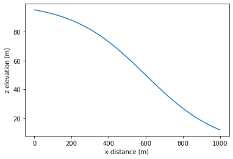

[1]:
import sys,os
sys.path.append(os.path.join(os.environ['ATS_SRC_DIR'],'tools','meshing','meshing_ats'))
import meshing_ats
import numpy as np
from matplotlib import pyplot as plt
Matplotlib created a temporary config/cache directory at /tmp/matplotlib-njroe6pg because the default path (/home/ats_sc_user/.cache/matplotlib) is not a writable directory; it is highly recommended to set the MPLCONFIGDIR environment variable to a writable directory, in particular to speed up the import of Matplotlib and to better support multiprocessing.
[4]:
# Specify the top surface, given by z(x).
#
# 1 km long hillslope, 10% slope, 100 cells (or 101 nodes) in x.
x = np.linspace(0,1000,101)
z = 100*(1-1/(1+np.exp(-(x-600)/200)))
print(f'# of x and z coordinates: {len(x)}, {len(z)}')
print(x[0],x[100])
print(z[0],z[100])
# plot the surface topography
plt.plot(x,z); plt.xlabel('x distance (m)'); plt.ylabel('z elevation (m)')
# make the (manifold) 2D mesh.
m2 = meshing_ats.Mesh2D.from_Transect(x,z)
print(f'# of cells: {m2.num_cells()}')
print("slope: ",(z[100]-z[0])/(x[100]-x[0]))
# of x and z coordinates: 101, 101
0.0 1000.0
95.25741268224333 11.920292202211769
# of cells: 100
slope: -0.08333712048003156

[7]:
# In this mesh, we vary the organic layer thickness across the hillslope.
#
# Changing organic layer thickness
def organic_thickness(x):
"""This function is the thickness of the layer we want to vary as a function of distance down the slope"""
if x < 100:
thickness = 0.5
elif ((100 <= x) and (x <= 200)):
thickness = -0.0045*x + 0.95
elif ((200 < x) and (x < 800)):
thickness = 0.05
elif ((800 <= x) and (x <= 900)):
thickness = 0.0025*x - 1.95
else:
thickness = 0.3
return thickness
org_layer_thickness = np.array([organic_thickness(xx) for xx in m2.coords[:,0]])
plt.plot(x, org_layer_thickness[0:101]); plt.xlabel('x distance (m)'); plt.ylabel('org. layer thickness (m)');
[8]:
# geometry of the transect extrusion
transect_layer_types = []
transect_layer_data = []
transect_layer_ncells = []
depth = [] # bookkeeping for material IDs
current_depth = 0
# We use the same dz as the above column, but because the material ID will change
# at a given depth in x, we spell it out with 1 cell per transect.
#
# 10 cells @ 5cm
dz = .05
depth.append(current_depth)
for i in range(10):
transect_layer_types.append('constant')
transect_layer_data.append(dz)
transect_layer_ncells.append(1)
current_depth += dz
depth.append(current_depth)
# grow dz by factors of 2, til we hit 2m
i = 0
while current_depth < 2:
dz *= 2
transect_layer_types.append("constant")
transect_layer_data.append(dz)
transect_layer_ncells.append(1)
current_depth += dz
depth.append(current_depth)
# 2m cells to 40m
dz = 2
while current_depth < 40:
transect_layer_types.append("constant")
transect_layer_data.append(dz)
transect_layer_ncells.append(1)
current_depth += dz
depth.append(current_depth)
[9]:
# calculate the cell centroid depth
depth = np.array(depth)
transect_layer_depth = (depth[0:-1] + depth[1:])/2
# allocate 2D matrix for material id, (# surface cells, # layers)
n_layers = len(transect_layer_data)
transect_layer_mat_ids=np.zeros((n_layers, m2.num_cells()), 'i')
for j in range(m2.num_cells()):
for i in range(n_layers):
if (transect_layer_depth[i] < org_layer_thickness[j]):
transect_layer_mat_ids[i,j] = 1001
elif transect_layer_depth[i] < 2:
transect_layer_mat_ids[i,j] = 1002
else:
transect_layer_mat_ids[i,j] = 999
[10]:
# print out the layer information for the first column of cells
meshing_ats.summarize_extrusion(transect_layer_types, transect_layer_data,
transect_layer_ncells, transect_layer_mat_ids, 0)
Cell summary:
------------------------------------------------------------
l_id | c_id |mat_id | dz | z_top
------------------------------------------------------------
00 | 00 | 1001 | 0.050000 | 0.000000
01 | 01 | 1001 | 0.050000 | 0.050000
02 | 02 | 1001 | 0.050000 | 0.100000
03 | 03 | 1001 | 0.050000 | 0.150000
04 | 04 | 1001 | 0.050000 | 0.200000
05 | 05 | 1001 | 0.050000 | 0.250000
06 | 06 | 1001 | 0.050000 | 0.300000
07 | 07 | 1001 | 0.050000 | 0.350000
08 | 08 | 1001 | 0.050000 | 0.400000
09 | 09 | 1001 | 0.050000 | 0.450000
10 | 10 | 1002 | 0.100000 | 0.500000
11 | 11 | 1002 | 0.200000 | 0.600000
12 | 12 | 1002 | 0.400000 | 0.800000
13 | 13 | 1002 | 0.800000 | 1.200000
14 | 14 | 999 | 2.000000 | 2.000000
15 | 15 | 999 | 2.000000 | 4.000000
16 | 16 | 999 | 2.000000 | 6.000000
17 | 17 | 999 | 2.000000 | 8.000000
18 | 18 | 999 | 2.000000 | 10.000000
19 | 19 | 999 | 2.000000 | 12.000000
20 | 20 | 999 | 2.000000 | 14.000000
21 | 21 | 999 | 2.000000 | 16.000000
22 | 22 | 999 | 2.000000 | 18.000000
23 | 23 | 999 | 2.000000 | 20.000000
24 | 24 | 999 | 2.000000 | 22.000000
25 | 25 | 999 | 2.000000 | 24.000000
26 | 26 | 999 | 2.000000 | 26.000000
27 | 27 | 999 | 2.000000 | 28.000000
28 | 28 | 999 | 2.000000 | 30.000000
29 | 29 | 999 | 2.000000 | 32.000000
30 | 30 | 999 | 2.000000 | 34.000000
31 | 31 | 999 | 2.000000 | 36.000000
32 | 32 | 999 | 2.000000 | 38.000000
[11]:
# make the mesh, save it as an exodus file
m3 = meshing_ats.Mesh3D.extruded_Mesh2D(m2, transect_layer_types,transect_layer_data,
transect_layer_ncells, transect_layer_mat_ids)
if os.path.exists('transect-sigmoid.exo'):
os.remove('transect-sigmoid.exo')
m3.write_exodus('transect-sigmoid.exo')
You are using exodus.py v 1.20.2 (seacas-py3), a python wrapper of some of the exodus library.
Copyright (c) 2013, 2014, 2015, 2016, 2017, 2018, 2019, 2020, 2021 National Technology &
Engineering Solutions of Sandia, LLC (NTESS). Under the terms of
Contract DE-NA0003525 with NTESS, the U.S. Government retains certain
rights in this software.
Opening exodus file: transect-sigmoid.exo
Closing exodus file: transect-sigmoid.exo
[12]:
# Now convert the file from "polyhedral" to "fixed format" and open it in VisIt or Paraview.
os.system("$AMANZI_TPLS_DIR/bin/meshconvert transect-sigmoid.exo transect-sigmoid_fixed_format.exo")
App to convert unstructured meshes between formats
Contact: Rao Garimella (rao@lanl.gov)
Importing mesh from ExodusII file...Building classification information....Done
Exporting mesh to ExodusII/NemesisI format...Done
[12]:
0
[ ]: